如如-智慧軟體機器人
如如-智慧軟體機器人
專案安裝
RTE 專案安裝
版本
| 日期 | 版號 | 備註 |
|---|---|---|
| 2022-03-30 | 2022030002 | 改版 |
| 2021-08-18 | 2021080001 | 改版 |
| 2021-02-25 | 2021020001 | 改版 |
| 2020-12-14 | 2020120001 | 初版 |
作業目的
當完成基礎平台安裝後，進入專案安裝
環境需求
| 項目 | 內容 | 備註 |
|---|---|---|
| 帳號 | 請使用RURU站台管理員帳號 | 平台預設帳號，安裝過程會預設強制修改密碼 |
| 環境 | RTE | 已完成基礎套件安裝及初始作業，且版本為008.010.001.050含以前 |
| 系統工具 | Project_UTL.mdb | |
| 應用系統安裝檔 | {專案料號}_{版本號}.mdb |
安裝步驟
建立企業
-
以站台管理員帳號[Admin_ArcareSite]登入站台管理系統
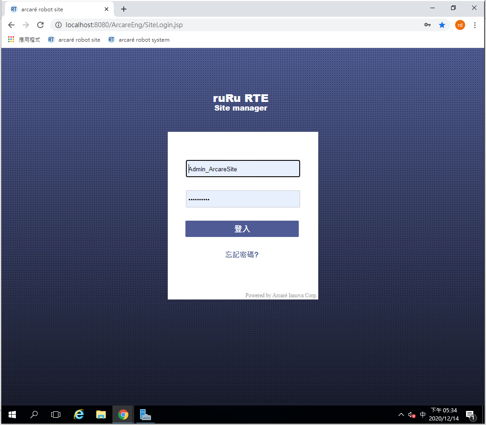 -
設定密碼激活等待時間

- 設定郵件伺服器

備註：如果帳號屬於不用驗證密碼則帳號、密碼欄位請勿輸入，並僅勾選[使用匿名發送郵件]，請勿勾選[需要使用安全密碼驗證(SPA)登入]
-
點選[企業設定]、並按下[新增]按鈕

- 跳出[企業資料]設定畫面
 # 企業資料：
# 企業資料：
- 企業代號： 公司簡稱，可以使用英文或中文但請勿使用特殊字元，20個字元
- 公司名稱： 公司名稱，可以使用英文或中文但請勿使用特殊字元，80個字元
- 公司英文名： 公司英文名稱，80個字元
- 公司地址： 公司地址，80個字元
- 國別代碼： 繁體中文、英文、西班牙語、簡體中文
- 電話國碼： 電話國碼，6個字元
- 公司電話代表號： 公司對外電話代表號碼，12個字元
- 收費聯絡人姓名： 帳務聯絡人，80個字元
- 統一編號/稅籍碼：統一編號/稅籍碼，80個字元
- 郵遞區號：郵遞區號，10個字元
- 負責人姓名： 公司負責人，80個字元
- Google API Key： Google服務堤供的金鑰
- 上傳檔案大小：預設50M，不得為零
- 同時最大上線人數：0為不設限制
- 使用者維持登入時間(分鐘)：0為不設限制
- 企業代號： 公司簡稱，可以使用英文或中文但請勿使用特殊字元，20個字元
-
站台完成設定，按下[儲存]鍵完成建立企業

- 企業建立完成
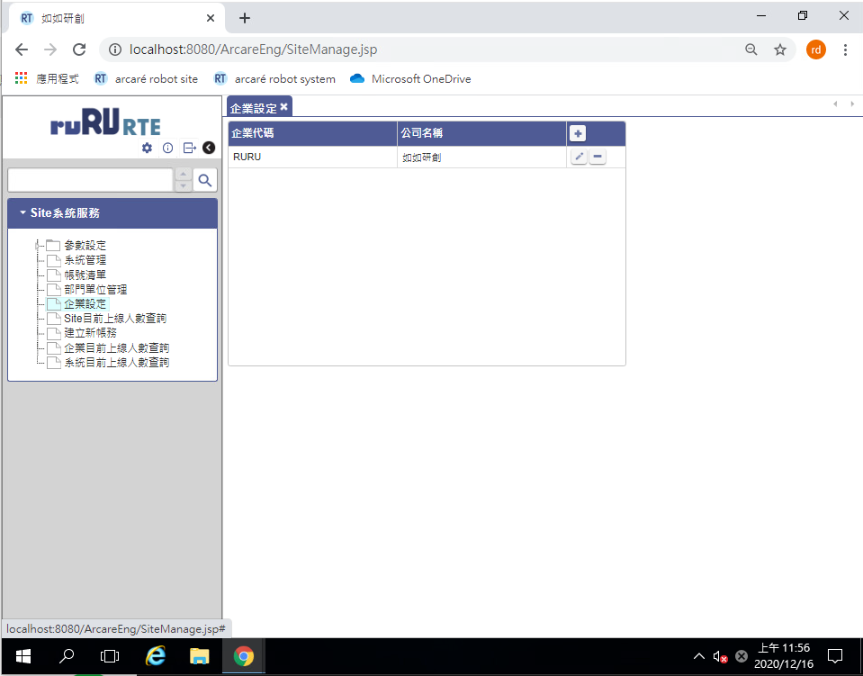
建立企業管理員帳號
-
使用站台管理員帳號，登入站台管理系統，進入[帳號清單] > [按下新增按鈕]
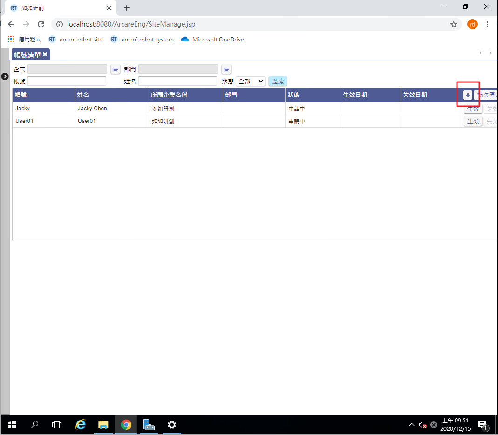 - 設定帳號資訊
 #### 帳號資訊：
#### 帳號資訊：
- 帳號：帳號名稱請以英文、數字設定不重複
- 所屬企業名稱：企業設定中的企業名稱
- 姓名：人員姓名
- 電子郵件信箱：電子郵件信箱
- 備用信箱：備用信箱位置
- 分機號碼/專線：市話分機、專線
- 手機號碼：行動電話
- 國別：台灣、西班牙、美國、中華人民共和國
- 部門單位：[部門單位管理]中的部門名稱
- 帳號：帳號名稱請以英文、數字設定不重複
-
指定帳號所屬企業

- 完成帳號設定，按下[儲存]鍵完成新增作業
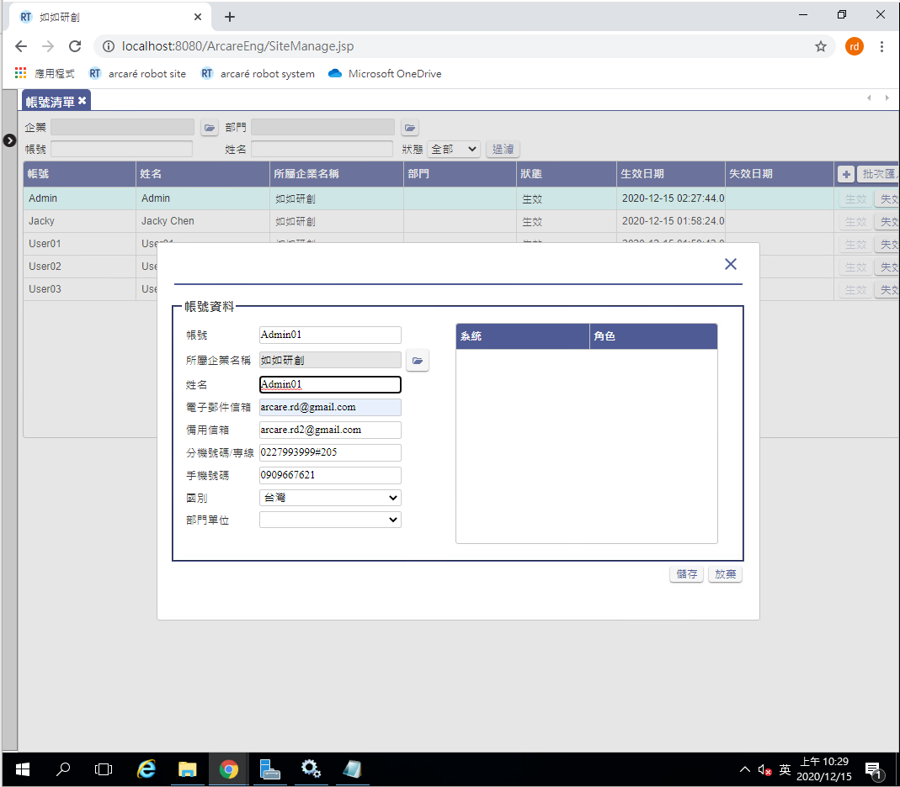
指定企業管理員
-
以站台管理員帳號登入站台管理系統，選取[企業設定]
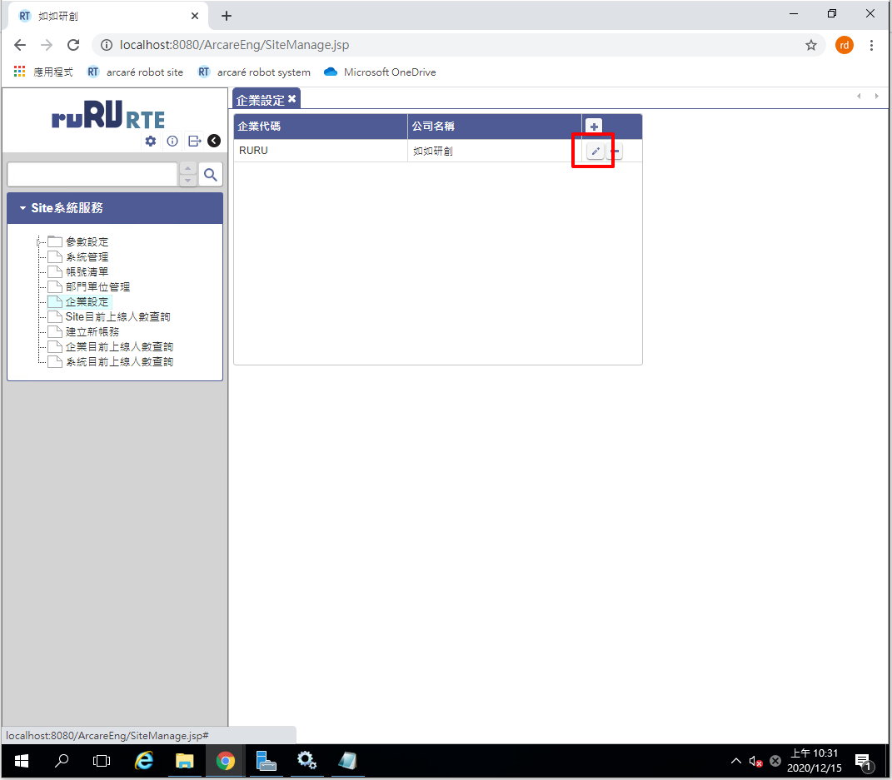 -
開啟帳號清單，指定企業管理員

-
選取欲指定人員，勾選帶回

-
按下儲存按鍵，完成指定企業管理員

建立新系統站台相關設定
-
以站台管理員帳戶登入站台管理介面

-
新增系統相關設定，點選[WellWareProject] > 按下[新增按鍵]

- 指定專案相關設定，並按下[儲存]鍵完成儲存
 # 專案資訊：
# 專案資訊：
- 專案代號(UUID)：專案於站台中的唯一碼（由站台自動產生）
- 組裝代號(UUID)：安裝的應用系統所屬組裝代號
(系統安裝前請務必確認組裝代號(UUID)正確無誤，否則系統將無法正確執行，該資料在[IDE][專案管理][工廠開案資訊]中) - 專案名稱：專案名稱，建議中英文或數字開頭，勿將第一個字元使用特殊字元
- 資料庫名稱：資料庫名稱，建議勿將第一個字元使用特殊字元，並避開MS-SQL關鍵字
- Table 備份資料庫名稱：備份用資料庫名稱，建議勿將第一個字元使用特殊字元，並避開MS-SQL關鍵字
- Table 備份保留份數：數字，預設值3份
- 電子郵件名稱：當該處有設定，且系統取用BPS功能，將主動寄一份給該電子郵件帳戶，主要提供RURU服務部門蒐集異常資訊提供支援服務
- 儲存編輯
- 專案代號(UUID)：專案於站台中的唯一碼（由站台自動產生）
-
儲存中
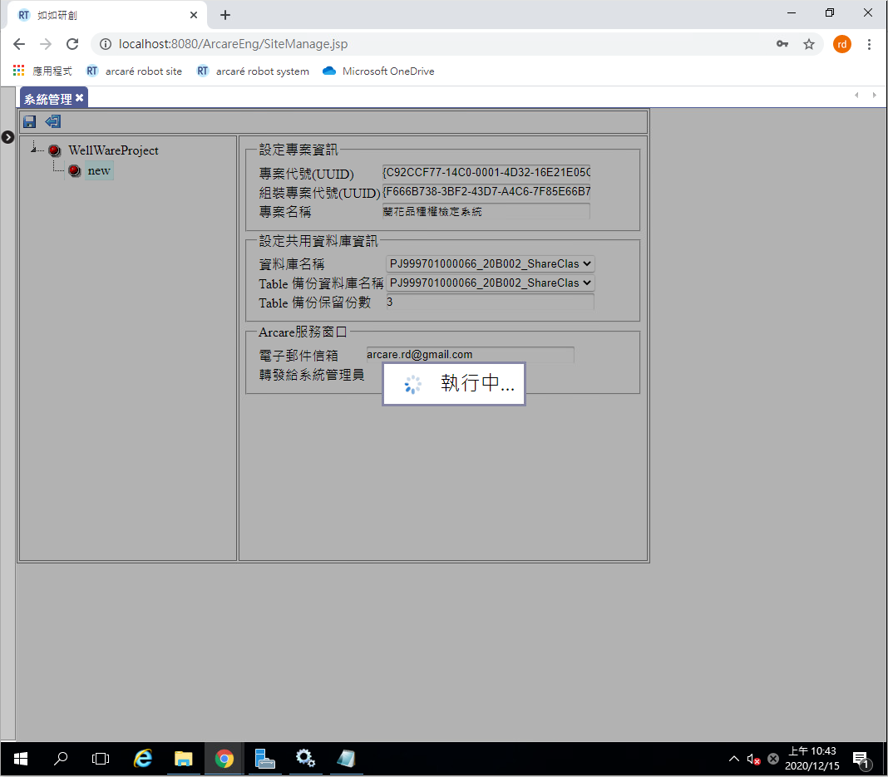 -
完成儲存

-
建立公司，選擇專案，按下[新增]按鍵
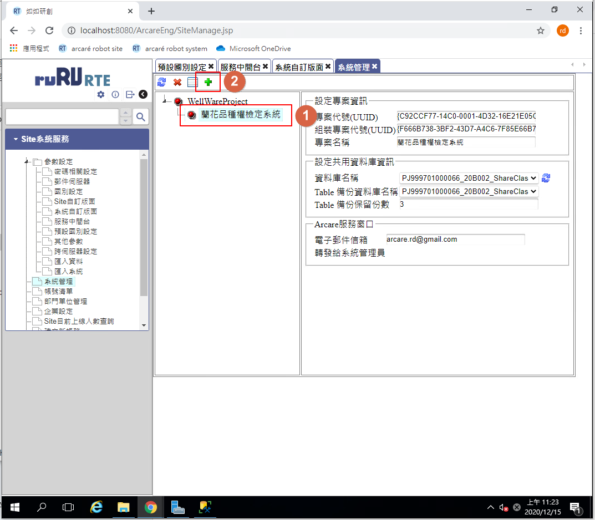 - 指定公司相關設定，並按下[儲存]鍵完成儲存
 # 公司資訊：
# 公司資訊：
- 公司代號(UUID)：公司於專案中的唯一碼（由站台自動產生）
- 公司名稱：公司名稱，建議勿將第一個字元使用特殊字元
- 公司英文名稱：公司英文名稱，建議勿將第一個字元使用特殊字元
- 資料庫名稱：資料庫名稱，建議勿將第一個字元使用特殊字元，並避開MS-SQL關鍵字
- Table 備份資料庫名稱：備份用資料庫名稱，建議勿將第一個字元使用特殊字元，並避開MS-SQL關鍵字
- Table 備份保留份數：數字，預設值3份
- 儲存
- 公司代號(UUID)：公司於專案中的唯一碼（由站台自動產生）
- 完成公司相關設定

為系統指定企業歸屬
-
以站台管理員帳戶登入站台管理介面
-
選取[企業設定]，按下[編輯]按鍵
-
按下新增按鍵，指定系統與企業相關資訊

-
按下系統選擇按鍵，挑回所需系統
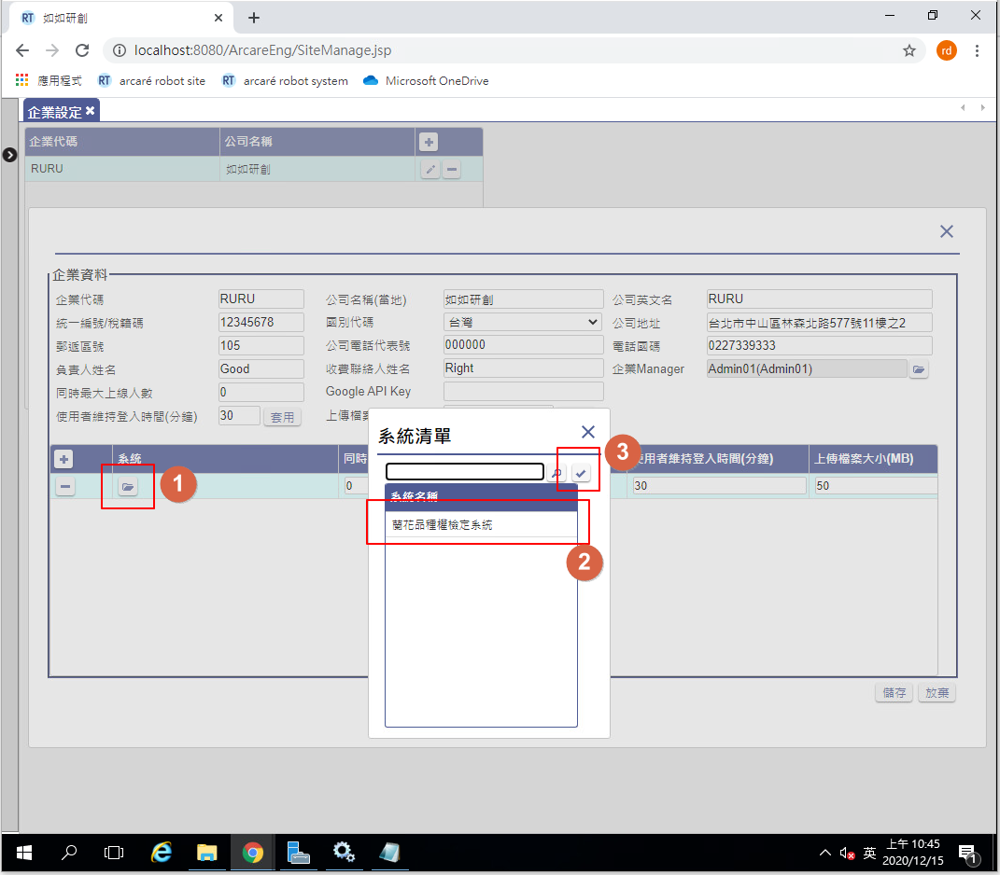 -
按下[儲存]按鍵，完成設定結束
 # 系統資訊：
# 系統資訊：- 系統名稱：挑選的系統名稱
- 選單樣式：登入RTE後左側選單樣式
- 上傳檔案大小：預設50M，不得為零
- 同時最大上線人數：0為不設限制
- 使用者維持登入時間(分鐘)：0為不設限制
- 系統名稱：挑選的系統名稱
安裝系統工具
-
以企業管理員帳戶登入站台管理介面
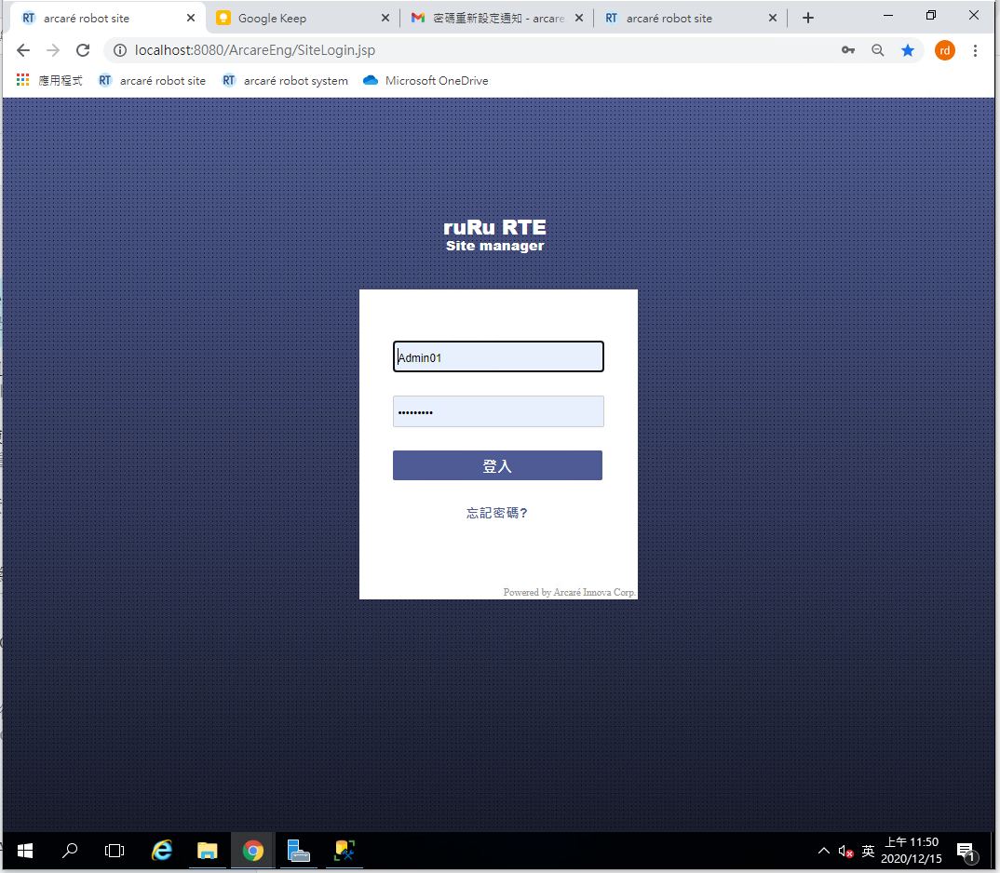 -
選擇[參數設定] > [選擇匯入系統]，按下[選擇檔案]選取要匯入的[系統工具]安裝檔
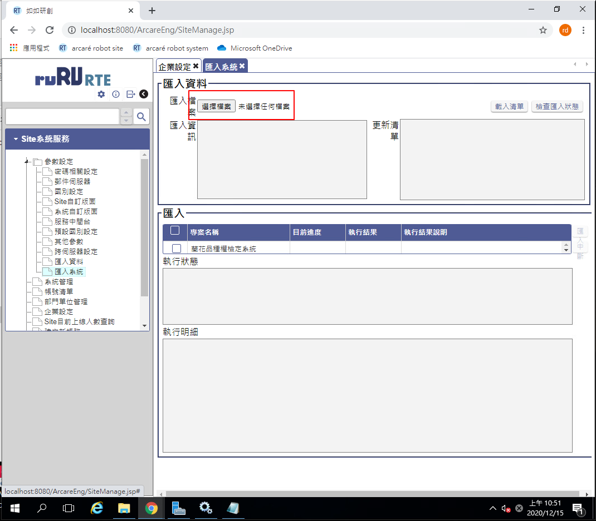 -
選取要匯入的[系統工具]安裝檔(“Project_UTL.mdb”)，按下[開啟]按鍵
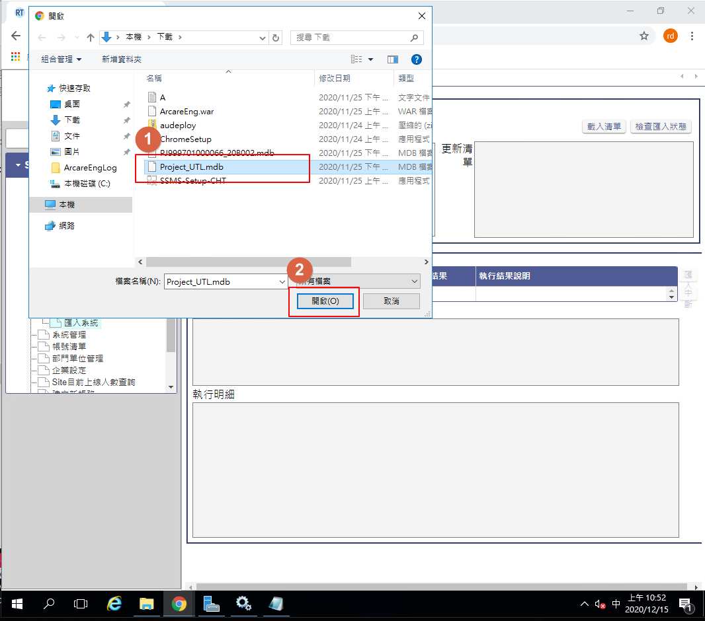 -
按下[載入清單]後，開始載入要匯入的清單

-
載入中

-
完成清單載入

-
選擇要匯入的目的專案，按下[匯入]按鍵進行匯入作業
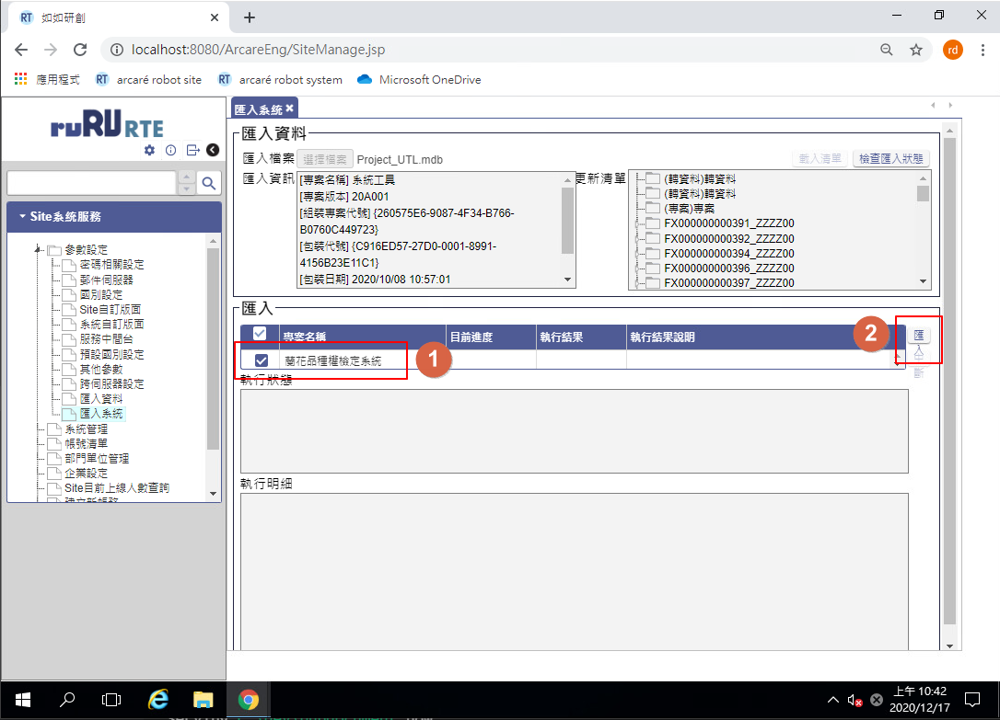 -
完成匯入作業

安裝應用系統
-
以站台管理員帳戶登入站台管理介面
-
選擇[參數設定] > [選擇匯入系統]，按下[選擇檔案]選取要匯入的[系統工具]安裝檔
-
選取要匯入的[應用系統]安裝檔({專案料號}_{版本編號}.mdb)，按下[開啟]按鍵
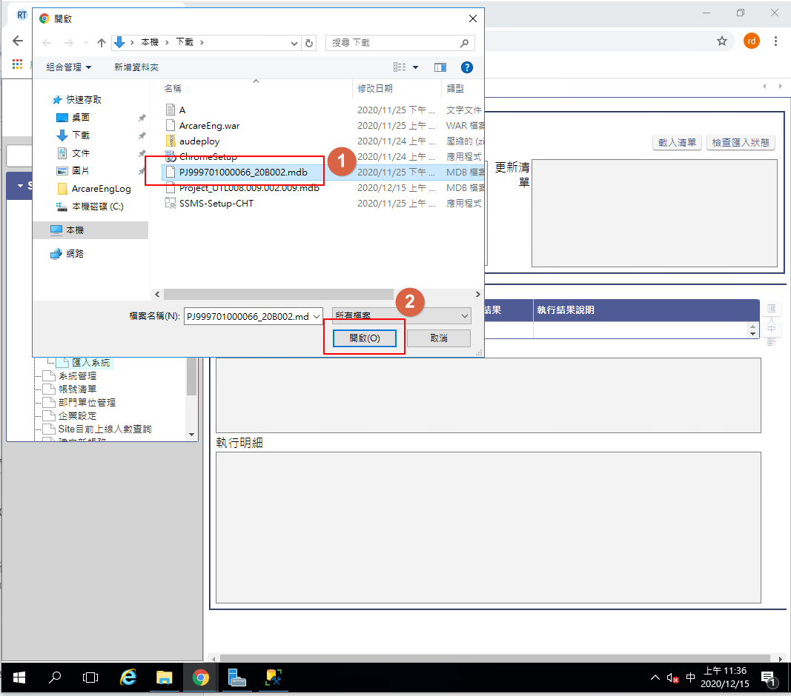 -
按下[載入清單]後，進行載入要匯入的清單

-
完成清單載入

-
選擇要匯入的目的專案，按下[匯入]按鍵進行匯入作業

-
完成匯入作業
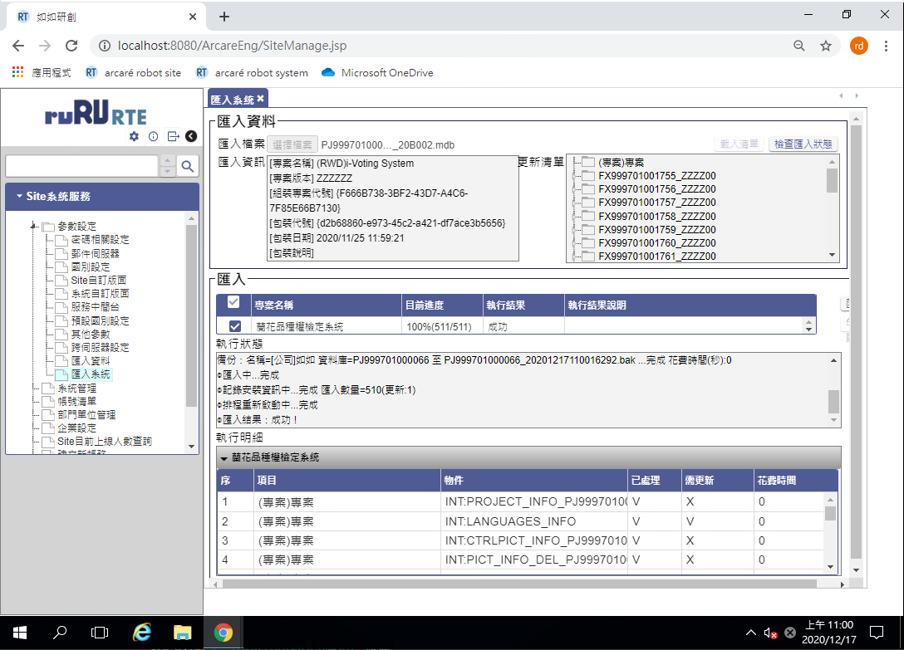
指定系統管理員
-
以企業管理員帳戶登入站台管理介面
-
選取[系統_管理員設定]介面，開啟系統清單，挑選要指定的系統

-
勾選指定系統帶回

-
按下[過濾鍵]查詢該系統現有管理員清單

-
按下[新增]按鍵開啟帳號清單
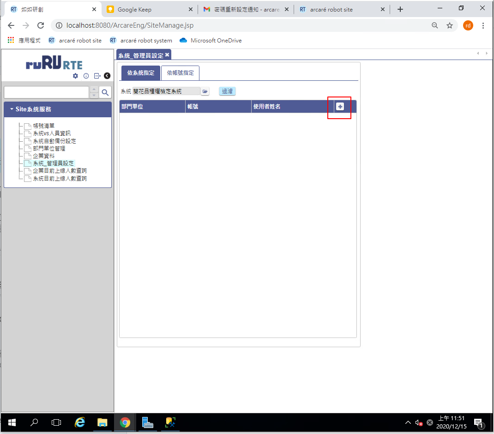 -
勾選帳號按下[儲存]按鍵指定帶回

-
完成系統管理員帳號指定

測試安裝
-
進入登入畫面
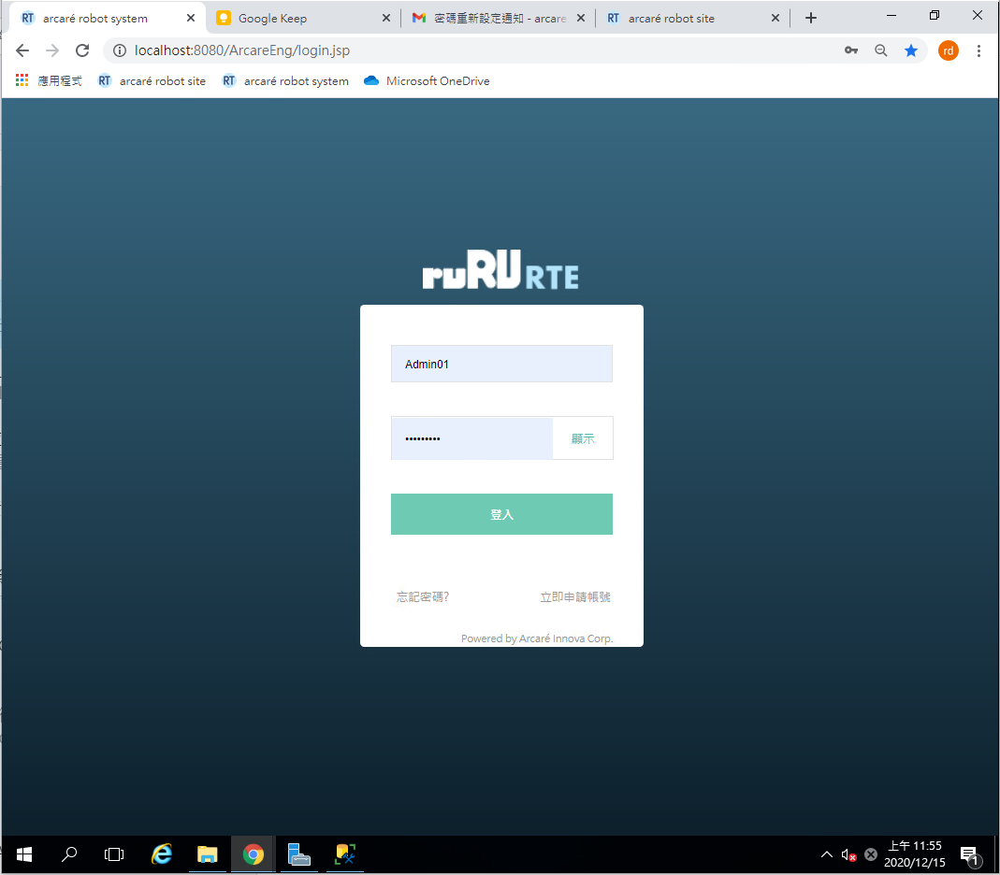 -
登入系統